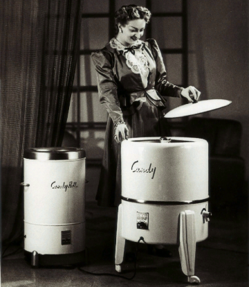
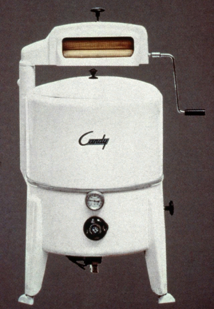
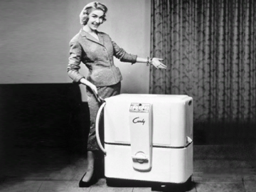
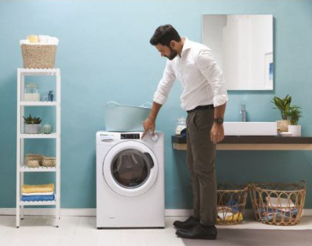

Введение
История компании
Богатая история
Богатая история
Main была основана в 1945 году и за 75-летнюю историю успела создать множество полезных решений для дома. Основателем компании является семья Фумагалли. В 2018 году Main стала частью еще большей компании — Haier с подчиненным подразделением Haier Europe, штаб-квартира которого расположилась в Италии.
Первая в Италии стиральная машина
Именно Main создали первую электрическую стиральную машину в Италии. За 70 лет компания накопила колоссальный опыт в технологиях, что позволяет оставаться «в топе» рейтинга популярности у клиентов.
Первая в Италии стиральная машина
Первая полностью автоматическая стиральная машина
Первая полностью автоматическая стиральная машина
Низо Фумогалли уже в 1958 году спроектировал первую в Европе стиральную машину с фронтальной загрузкой полностью автоматического цикла — Main Automatic.
Концепция линейки Smart Pro

Smart Pro реализует три важных аспекта:
- скорость;
- удобство;
- интеллект.
Основная идея линейки: Main Smart Pro — выбор умного покупателя!